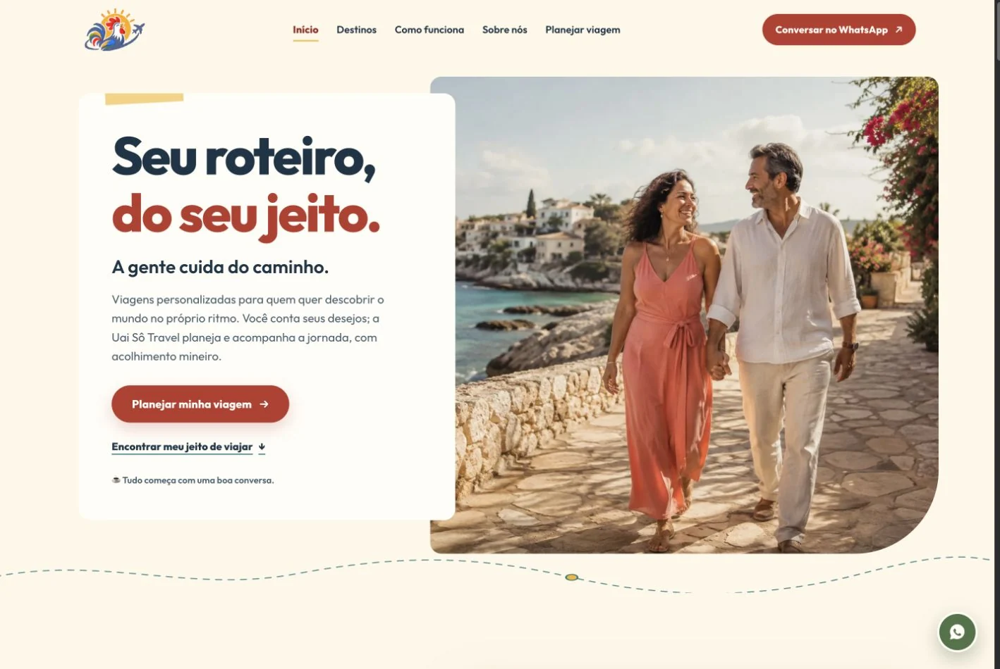

Ampliar capturaUai Sô Travel
Uma experiência digital com alma mineira.
Destinos, estilos de viagem e planejamento reunidos em uma apresentação acolhedora.
Sobre o projeto
A navegação conecta páginas de destinos, a história da agência e um formulário que prepara o contato pelo WhatsApp. A composição combina fotografias, tons quentes e referências às raízes mineiras.